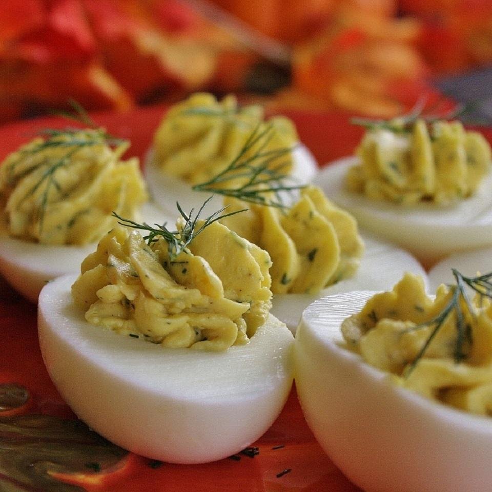

Deviled Eggs

- prep: 10 mins
- total: 10 mins
- Servings: 6
- Yield: 12 deviled egg halves
Description
Ingredients
- 6 hard-cooked eggs, halved
- ¼ cup mayonnaise
- 1 teaspoon rice wine vinegar
- ½ teaspoon chopped fresh dill (Optional)
- 1 teaspoon Dijon mustard
- ¼ teaspoon garlic powder
- ⅛ teaspoon salt
- 12 sprigs fresh dill/celery (Optional)
Directions
- Step 1
Scoop egg yolks into a bowl and set egg whites aside. Mash yolks, mayonnaise,
vinegar, 1/2 teaspoon chopped dill, Dijon mustard, garlic powder, and salt.
Spoon yolk mixture into egg whites. Garnish with dill sprigs.
Refrigerate until ready to serve.